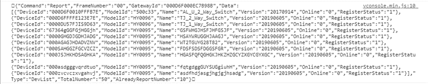
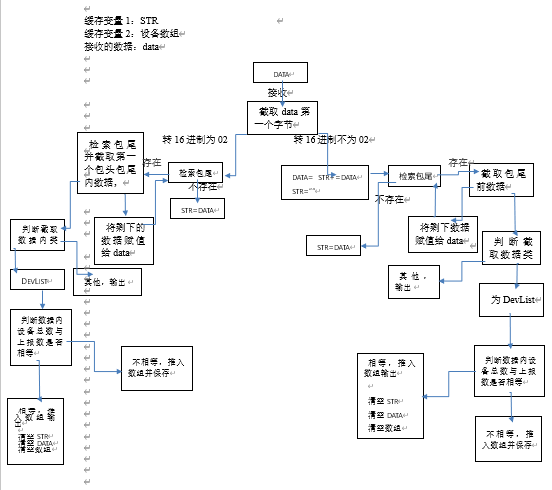

之前有个需求，由于H5端不支持TCPSocket通信，于是中间搭了个安卓框架作为通信的介质，在开发中遇到一个问题，当后端传一个比较大的数据上来时，一条完整的数据会没有规矩的分成若干个包，每条数据可能不存在完整的包头包尾。所以我想了一个用缓存数据的方法来对数据进行拼包。
后端会对每一串数据添加包头（十六进制02）和包尾（十六进制03）进行上报，分包后的数据解析后会有四种情况：
1、 包头*********包尾 或 包头*******包尾包头*******包尾
2、 包头*******
3、 ********
4、 *********包尾
例如设备列表数据上报，当有几十只设备的数据时，后端会对每十只设备的数据进行包头包尾的添加。

上图是一条完整的数据。
每串json有字段TotalNumber（总共的设备数）AlreadyReportNumber（已上报的设备数）根据两个数据的比较来判断数据是否已经上传完。
因为所有上报的数据只用一个接口来接受，所以在处理数据时还要判断数据类型，项目中所用思路以下：

因为进行分包的是Type为DevList的数据，后端传上来还会有其他类型的数据，所以我会将其他类型的数据去除包头包尾后单独输出，如果是分包的DevList数据，会用一个变量缓存，再拼接到下一串上传的数据中。